Web Engineering Seminar in the Winter Semester 2023
Research Data Management in the Context of Electronic Laboratory Notebooks
Utkarsh Yadav
Sindhura Sivaprasad
Technische Universität Chemnitz
Chemnitz, Germany
1. Introduction [Written by Utkarsh Yadav]
Research data management (RDM) involves the organization, storage, and preservation of data generated during
research. It ensures data integrity, accessibility, and compliance with ethical and legal standards.
RDM includes data collection, documentation, sharing and long-term storage.
Researchers use systematic strategies to manage data throughout their lifecycle, improving reproducibility
and collaboration. Good RDM promotes transparency and facilitates validation of research results, promoting
a structured approach to processing valuable information. [1]
According to Lass, the demand created by collaborative work is hindered by the functionality of paper
notebooks. Sharing information recorded in a separate notebook requires the scientist to copy that
information and send it to the requesting scientist. This takes time, effort and distracts the scientist
from his main work. It also creates problems for scientists in receiving and using information. It is
difficult to record and maintain an audit trail of the information contained in copied pages. [2]
In the context of the Electronic Laboratory Notebook (ELN), research data management (RDM) is seamlessly
integrated.
ELN provides a digital platform for scientists to record, organize and share their data and experimental
results. RDM in ELN ensures systematic data processing throughout the research lifecycle, from data entry to
sharing
and archiving. ELN streamlines collaboration, improves reproducibility, and promotes efficient data
organization.
Researchers benefit from a unified platform that not only makes it easy to record experimental details, but
also ensures data is properly managed, improving overall research efficiency and traceability origins of
scientific work.
2. Overview of ELN [Written by Utkarsh Yadav]
Electronic Laboratory Notebooks (ELNs) are software programs that are used to store, organize, and manage
laboratory data. They are designed to replace traditional paper laboratory notebooks and offer a number of
advantages such as Seamless management of data, Collaboration, Workflow optimization, Reuse of research
data.
[6].
2.1 Motivation
The 'motivation' for Electronic Laboratory Notebooks (ELNs) arises from addressing limitations in
traditional paper
notebooks. Paper records pose challenges in organization, retrieval, and susceptibility to damage. ELNs, a
digital solution, offer easy data management, searchability, and sharing. This transition enhances research
efficiency, safeguards against data loss, and fosters collaborative scientific record-keeping.
2.2 Principles
Based on the principles of digitization, ELN goes beyond the limitations of traditional paper. Based on
digital records management, ELN emphasizes seamless organization, retrieval, and secure data sharing. The
search function is intended for quick access to information. Following the principles of shareable datasets,
ELNs improve collaboration, ensure integrity and transparency, and are the basis for modern data management.
2.3 Applicability
ELNs have versatile applications in a variety of industries, including pharmaceutical and chemical research,
materials science, environmental science, food science, and clinical research. The company's digital
platform streamlines data management to ensure efficiency, collaboration, and compliance across a variety of
scientific endeavors. ELNs serve as important tools to improve productivity and advance research practices.
2. Goals & Objectives [Written by Utkarsh Yadav]
The objectives of ELNs are as follows:
2.1 Improve Efficiency and Productivity
ELNs aim to streamline lab workflows by minimizing manual data tasks. Automation optimizes experiments,
boosting
efficiency. Quick, organized data access in ELNs enhances overall research productivity.
2.2 Enhance Quality and Reproducibility
ELNs prioritize standardized data entry to minimize errors and ensure accuracy. Comprehensive documentation
fosters experiment reproducibility, and version tracking adds transparency, maintaining research record
integrity.
2.3 Reduce Risk of Data Loss or Corruption
ELNs use digital storage to protect against physical damage or loss of paper records. Regular backups and
secure
data systems mitigate risks of corruption or loss. Encryption and data integrity checks enhance the
protection
of valuable research data.
2.4 Facilitate Sharing and Collaboration
ELNs offer secure data-sharing platforms, promoting collaboration. Real-time features enable simultaneous
project work, fostering a collaborative research environment. Enhanced accessibility ensures seamless
sharing,
contributing to collaborative research success.
2.5 Comply with Regulatory Requirements
ELNs provide tools for thorough, audit-ready records, ensuring regulatory compliance. Integrated compliance
features align with industry regulations. Electronic signatures and secure access contribute to meeting
regulatory requirements, reinforcing reliability and compliance in ELNs.
3. Types of ELN. [Written
by Sindura Sivaprasad]
Poor UX design refers to design decisions and implementation that lead to a negative user experience. It may
contain elements such as confusing navigation, poor visual hierarchy, long loading times,
or difficult interactions. Poor UX design is usually unintended and can be due to a lack of awareness of
user demands, lack of resources, or other issues.
Dark patterns, on the other hand, are purposely created components or strategies that are used to deceive,
manipulate, or exploit users. They are designed to persuade people to perform actions they
may not wish to perform or to deceive them into disclosing sensitive information. Dark patterns are
intentionally designed to favour the business or service provider over the user's best interests.
In conclusion, the key distinction between poor UX design and dark patterns is intent. Bad UX design is
typically unintentional and results from design defects or shortcomings whereas dark patterns
are purposefully created to deceive or manipulate users for the benefit of the business or service provider.
4. Factors Affecting Choice of ELN. [Written by Sindura Sivaprasad]
4.1 Sneaking
Sneaking refers to a category of dark pattern that tries to misrepresent user behavior or hide/delay
information which users would likely object to if it were made available to them.
[2].
There are three types of the Sneaking dark pattern:
Sneak into Basket, Hidden Costs, and Hidden Subscription
4.1.1 Sneak into basket
The 'Sneak into Basket' is a type of dark pattern which adds additional products to users' shopping baskets
without their approval, typically promoting the added products as
'bonuses' and 'essential'. As shown in the figure 1 [2]
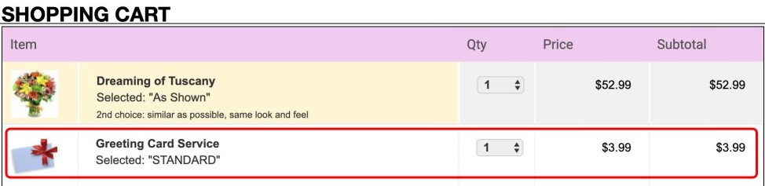
Figure 1: Sneak into Basket on avasflowers.net. Despite the fact that no greeting cards
are requested, one for $3.99 is automatically added.
[2].
4.1.2 Hidden Costs
The 'Hidden Costs' dark pattern exposes users to new, additional, and unusually expensive charges immediately
before they make a purchase.[2]Figure 2: Hidden Costs on proflowers.com. The Care & Handling fee ($2.99) is stated on
the final step[2].
4.1.3 Hidden Subscription
The dark pattern 'Hidden Subscription' costs users a recurring subscription under the disguise of a one-time
cost or a free trial. Users are often unaware of the recurring fee until they are charged several days
or months after their purchase, if at all. [2]Figure 3: Hidden Subscription. The website fails to disclose that the Advantage service
is an annual subscription worth $89
unless the user clicks on Learn More [2].
4.2 Urgency
The term 'urgency' refers to a type of dark pattern that imposes a time limit on a sale or deal, hence
boosting up user decision-making and purchases. Urgency dark patterns take advantage of users' scarcity
bias,
making discounts and offers more appealing than they would otherwise be, and communicating that inaction
will result in missing out on possible savings.
There are two types of the Urgency dark pattern:
Countdown Timers and Limited-time Messages [2].
4.2.1 Countdown Timers
The 'Countdown Timer' is a deceptive design that visually symbolizes a deadline by displaying a steadily
decreasing time display until the deadline is reached. [2]Figure 4:Countdown Timer on mattressfirm.com. The header displays a Flash Sale where
the majority of
discounted products remain the same on a day-to-day basis. [2].
4.2.2 Limited-Time Message
The 'Limited-time Message' dark pattern is a static urgency message without a deadline. Websites conceal
information from users and thereby mislead the nature
of the offer by failing to state the deadline.[2]Figure 5: Limited-time Message on chicwish.com. The website
claims the sale will end ‘soon’ without stating a deadline.[2].
4.3 Misdirection
Dark patterns in the 'Misdirection' category employs visuals, language, and emotions to lead users in a
particular direction or divert their attention from a specific option.[2].
There are four types of the Misdirection dark pattern:
Confirmshaming, Trick Questions, Visual Interference and Pressured Selling [2].
4.3.1 Confirmshaming
The 'Confirmshaming' dark pattern employs language and emotion to discourage users from selecting a particular
option. Confirmshaming was especially common in popup dialogs that requested
users' email addresses in exchange for a discount, when the option to decline the offer—which the website did
not want users to choose—was portrayed as a humiliating alternative. [2]
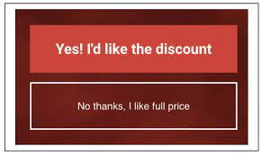
Figure 6: Confirmshaming on radioshack.com.
The option to dismiss the popup is framed
to shame the user into avoiding it.
[2].
4.3.2 Visual Interference.
The 'Visual Interference' dark pattern uses style and visual presentation to persuade users towards particular
options while discouraging alternatives.[2]
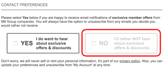
Figure 7: Visual Interference on greenfingers.com. The option to opt
out of marketing communication is grayed, making it seem unavailable even though it can be clicked.[2].
4.3.3 Trick Questions.
The 'Trick Questions' pattern uses deceptive or ambiguous terminology to trick users into opting for particular
choices.
Trick Questions takes advantage of the default and framing effect cognitive biases in users, making them more
prone to a choice they mistakenly assume to be compatible with their
preferences.[2]
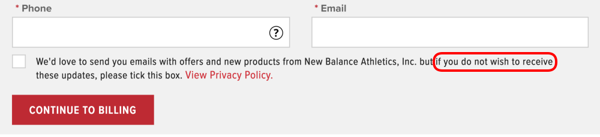
Figure 8: Trick Questions on newbalance.co.uk. Opting out of marketing
communication requires ticking the checkbox.[2].
4.3.4 Pressured Selling.
The 'Pressured Selling' dark pattern describes defaults or high-pressure approaches that lead users to spend
money on a more costly variant of a product or related products (cross-selling).[2]Figure 9: Pressured Selling on
1800flowers.com. The most
expensive product is the default.[2].
4.4 Social Proof
Individuals assess the correct action and behavior for themselves in a given scenario based on the action
and behavior of others, according to the social proof principle. The 'Social Proof' dark pattern leverages
this influence to speed up user decisions and purchases,
taking use of the bandwagon effect cognitive bias.[2].
There are two types of the Social Proof dark pattern:
Activity Notifications and Testimonials of Uncertain Origin.
4.4.1 Activity Notifications
The 'Activity Notification' dark pattern is a quick, frequently recurring, and attention-grabbing message
appearing on product pages to highlight other users' activity.[2]Figure 10: Activity Notification on tkmaxx.com. The message indicates how many people
added the product to the cart in
the last 72 hours. [2].
4.4.2 Testimonials of Uncertain Origin.
The dark pattern 'Testimonials of Uncertain Origin' refers to the use of customer testimonials who's source or
how they were collected and made is unclear.[2]
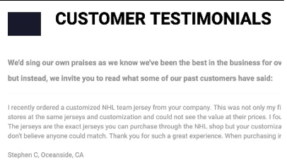
Figure 11:Testimonials of Uncertain Origin on
coolhockey.com. The same testimonials on ealerjerseys.com with different customer names.[2].
4.5 Scarcity
Scarcity refers to the category of dark patterns that indicate a product's limited stock or great
popularity, thereby enhancing its perceived worth and desirability.[2].
There are two types of the Scarcity dark pattern: Low-stock Messages and High-demand Messages.
4.5.1 Low-stock Messages
The 'Low-stock Message' dark pattern notifies users when a product is in limited availability. [2]Figure 12: Low-stock on orthofeet
.com. Appears for all products.[2].
4.5.2 High-demand Messages
The High-demand Message dark pattern informs users that a product is in great demand and will likely sell out
soon. [2]
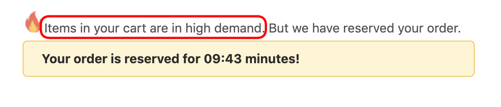
Figure 13: High-demand Message on fashionnova.com.
The message appears for all products in the cart.[2].
4.6 Obstruction
Obstruction refers to the group of dark patterns that make a specific action more difficult than it should
be in order to discourage users from performing that action. [2].
There is one type of the Obstruction dark pattern: Hard to Cancel
4.6.1 Hard to Cancel
Obstruction makes it simple for people to sign up for recurring subscriptions and memberships, but also makes it
difficult for them to cancel the subscriptions later. [2]Figure 14: Hard to Cancel on savagex.com. The website discloses
upfront that the recurring service can only be canceled through
customer care.[2].
4.7 Forced Action
The term 'Forced Action' refers to a type of dark pattern that requires users to carry out additional and
tangential activities in order to fulfill their tasks.[2].
There is one type of the Forced Action dark pattern: Forced Enrollment.
4.7.1 Forced Enrollment
This dark pattern explicitly induces users into signing up for marketing communications or creates accounts in
order to obtain users' personal information.[2]
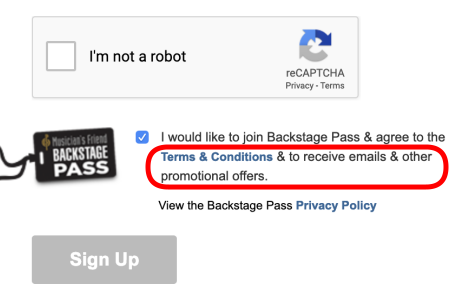
Figure 15:Forced Enrollment on musiciansfriend.com.
Agreeing to the terms of use also requires agreeing
to receive emails and promotions.[2].
5. Challenges managing interdisciplinary reasearch data
[Written by Utkarh Yadav]
5.1 Research Landscape.
Navigating the research environment poses significant challenges, especially in effectively managing data shared
between disciplines involved in collaborative environmental research.
Fragmented research areas make it difficult to integrate different methods and terminology, preventing seamless
collaborative data management.
[6].
5.2 Attitudes and Experience.
In the field of attitudes and experiences, interdisciplinary research opens up different perspectives on how to
work with data. It is like a mix of different flavors, and each researcher are accustomed to a unique approach.
Data management in this context is like juggling different preferences, turning individual inputs into
collaborative challenges with a special twist. Establishing standardized protocols is essential to accommodate
this diversity.[6].
5.3 Data Complexity.
The complexity of data further compounds challenges in interdisciplinary research. The extensive variety of data
types adds layers of intricacy to collaborative data management efforts. Striking a balance between different
data formats and ensuring coherence in analysis become critical tasks.[6].
5.4 long-term preservation of data.
Long-term data retention in collaborative research presents challenges, exacerbated by strict open access
requirements from funding agencies and publishers.
Effectively maintaining compliant digital records while ensuring continued accessibility can be a delicate
task.[6].
5.5 Repository Decisions.
Choosing the right data repository can be difficult in collaborative research, requiring researchers to choose
the right storage and coordinate data transfer, much like choosing a bookshelf.
This process is critical to effective collaborative data management.[6].
6. Regional, cultural and language differences in dark patterns [Written by
Akshata Anil
Mithari]
Dark patterns are design decisions or strategies used in user interfaces to influence or trick users into
performing behaviors they do not wish to perform. These patterns may vary among areas according to cultural
values, legal regulations, and user expectations.
Cultural and regional differences might influence how some design methods are seen and tolerated. What is
accepted or manipulative in one culture or location may be considered unethical or deceitful in another.
Specific colors, symbols, or phrases employed in dark patterns, for example, may have various implications
or meanings in different cultures, resulting in differences in their effectiveness.
Language also has an important function. Dark patterns rely largely on strong communication and
comprehension between the user and the interface. To be effective, the wording, phrasing, or linguistic
approaches utilized in dark patterns may need to be adjusted to other languages.
In specific language circumstances, certain linguistic nuances or cultural references. may be used to create
compelling or deceptive messaging.
7. ELN Eradicating Invasivness in (RDM)
[Written by Utkarh Yadav]
7.1 User-Friendly Interfaces.
Design ELN interfaces that are intuitive and user-friendly, minimizing disruptions to researchers' workflows and
reducing the perception of invasiveness.
[6].
7.2 Customizable Access Controls.
Implement customizable access controls to allow researchers to manage who can view, edit, or contribute to
specific sections of the ELN. This ensures that sensitive information is only accessible to authorized
individuals. [6].
7.3 Transparent Data Handling Policies.
Clearly communicate data handling policies within the ELN to make researchers aware of how their data is
managed, shared, and stored. Transparency helps build trust and reduces concerns about invasiveness.
[6].
7.4 Opt-In Collaboration Features.
Provide opt-in features for collaboration, allowing researchers to choose when and how they share their data.
This approach respects the autonomy of researchers and minimizes perceived invasiveness.[6].
7.5 End-User Training.
Offer comprehensive training for end-users to familiarize them with the ELN interface and features. A
well-trained user is more likely to navigate the system efficiently, reducing the potential for frustration and
perceived invasiveness.
[6].
7.6 Data Ownership and Control.
Clearly define data ownership and control policies within the ELN, emphasizing that researchers retain control
over their data. This helps alleviate concerns about loss of control and invasiveness.
[6].
7.7 Integration Flexibility.
Provide flexibility in integrating ELNs with existing workflows and systems. This ensures that researchers can
seamlessly incorporate ELNs into their processes, minimizing disruptions and the feeling of invasiveness.
[6].
7.8 Responsive Support and Feedback Channels.
Establish responsive support channels and feedback mechanisms within the ELN platform. This allows researchers
to address concerns promptly and provides a channel for continuous improvement, reducing perceived invasiveness
over time.
[6].
7.9 Consent Mechanisms.
Implement consent mechanisms for specific data-sharing activities. Researchers should have the ability to
provide explicit consent before certain actions, adding a layer of control and reducing the sense of
invasiveness.
[6].
7.10 Regular Updates and Improvements.
Continuously update and improve the ELN platform based on user feedback and evolving research needs. Regular
updates demonstrate a commitment to addressing concerns and enhancing user experience, mitigating perceived
invasiveness.
[6].
8. Tools and Frameworks for ELN [Written by Utkarsh Yadav]
8.1 OpenBIS (Open Biological Information System)
The openBIS is an open-source platform that provides an ELN and a Laboratory Information Management System
for academic life science laboratories. It offers a solution for linking and retrieving experimental details
and results, which is often problematic when using paper notebooks. It also allows the storage and easy
accessibility of all data in a single place, speeding up work and facilitating data retrieval in the
laboratory.
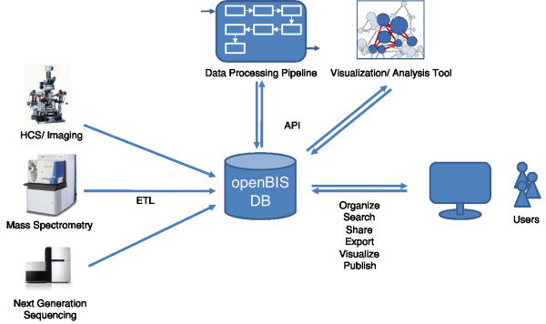
Figure 1: Integrating data from different sources to OpenBIS DB.
[2]
Researchers can efficiently document their work, describe materials and methods, and collect raw and
analyzed data using the user-friendly web interface.
8.1.1 Key Features of OpenBIS
8.1.1.1 Efficient documentation
openBIS allows researchers to efficiently document their work. Researcher can describe materials and methods
used and also collect raw and analyzed data, providing a comprehensive way of record keeping[6].
8.1.1.2 User-friendly interface
The OPENBIS system boasts a user-friendly web interface, empowering researchers to seamlessly execute operations
like adding, editing, browsing, and searching data. This accessibility ensures convenience in information
retrieval, contributing to a user-friendly research environment[6].
8.1.1.3 Centralized data storage
The centralized data storage feature accelerates work processes and expedites data retrieval. This not only
ensures organized data but also enhances overall accessibility, promoting efficiency in research activities[6].
8.1.1.4 Customization and extension
openBIS allows for platform customization and extension, offering the flexibility to integrate additional
functionalities. This includes the incorporation of features like report generation or the integration of other
openBIS extensions. This adaptability enhances the platform's capabilities, catering to diverse research needs[6].
8.2 eCAT ELN
Developed by Axiope Limited, a pioneering effort in the realm of Electronic Laboratory Notebooks (ELNs)
emerged for researchers in non-commercial institutions. This ELN, the inaugural of its kind, was
meticulously crafted in close collaboration with laboratory scientists. Marked by its high scalability, the
web-based ELN incorporates advanced collaborative features, providing a versatile and efficient platform
tailored to the evolving needs of scientific research.
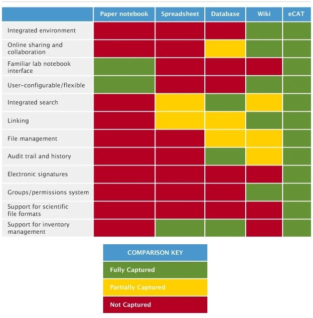
Figure 2: Ecat comparison to other alternatives.
[2]
8.2.1 Key Features of ECAT
8.2.1.1 Permission System.
eCAT incorporates a robust permission system, allowing precise control over data access. This ensures that users have the appropriate permissions, maintaining the confidentiality and integrity of research data[6].
8.2.1.2 Controlled Sharing.
A distinctive feature of eCAT is its controlled sharing functionality, enabling researchers to share data selectively. This ensures that sensitive information is shared only with authorized individuals, fostering collaboration while safeguarding data security[6].
8.2.1.3 Audit Trail.
eCAT maintains a thorough audit trail, providing a detailed record of all activities within the system. This transparency enhances accountability, enabling researchers to track changes, additions, or deletions made to the data, thus ensuring data integrity[6].
8.2.1.4 Electronic Signature
Offering electronic signature capabilities, eCAT ensures the authenticity and legality of data entries. This feature is crucial for meeting regulatory requirements and validating the integrity of the research data recorded in the system[6].
8.2.1.5 Search Functionalities
eCAT's search functionalities provide a powerful tool for researchers to retrieve specific information swiftly. This feature enhances efficiency in data retrieval, contributing to streamlined research workflows and facilitating easy access to relevant data[6].
8. Empirical Experiment [Written by Akshay Ghavale]
In the paper titled "Towards the Identification of Dark Patterns: An Analysis Based on End-User Reactions"
[5] researchers aimed to investigate end-users' susceptibility to different types of dark
patterns and
understand
the factors contributing to their victimization. The study was conducted in two phases: a self-administered
questionnaire and an experiment. In the questionnaire phase, participants from the UX or IT industry were
selected, along with users who had limited exposure to dark patterns. Five variables (frequency of
occurrence, trustworthiness, level of frustration, misleading behavior, and physical appearance of the user
interface) were identified as relevant for identifying dark patterns. The questionnaire included examples of
each dark pattern, and participants rated the variables on a Likert scale. Correlations between the
variables were analyzed using exploratory factor analysis. The experiment phase involved 10 participants
performing tasks related to Roach Motel and Forced Continuity dark patterns, followed by open-ended
questions and variable rating. The results revealed participants' limited ability to identify dark patterns,
with Forced Continuity being the most identified and Roach Motel the least identified. Significant
correlations were found between the identification variables. However, no correlations were observed between
the variables of the least and most identifiable dark patterns.
In the self-administered questionnaire phase, participants from the UX or IT industry were selected,
including users with limited exposure to dark patterns. The questionnaire included examples of each dark
pattern and assessed the variables of frequency of occurrence, trustworthiness, level of frustration,
misleading behavior, and physical appearance of the user interface. Participants rated these variables on a
Likert scale, and their responses were collected and analyzed using exploratory factor analysis.
In the experiment phase, 10 participants, not belonging to the UX or IT industries, performed tasks related
to Roach Motel and Forced Continuity dark patterns. The participants' actions, time taken to complete tasks,
and willingness to provide personal information were observed. Open-ended questions were asked to gather
participants' reactions and opinions on the tasks. Participants also rated the identification variables for
each task.
Analysis of the self-administered questionnaire phase revealed that most participants claimed to have never
been tricked by websites, yet they were victims of at least one dark pattern. Forced Continuity was the most
identified dark pattern, while Roach Motel was the least identified. Significant correlations were found
between the identification variables, such as level of frustration and frequency of occurrence, frequency of
occurrence and trustworthiness, and physical appearance and trustworthiness.
In the experiment phase, participants struggled to locate the deactivation option on Facebook (Roach Motel),
and the process took longer than expected (steps are shown in Figure 17). For the Forced Continuity task on
Audible's website, participants
found it unnecessary to provide credit card details but were still willing to proceed due to the brand's
reputation (as shonwn in Figure 18). No significant correlations were found between the variables of the
least and most identifiable
dark patterns.
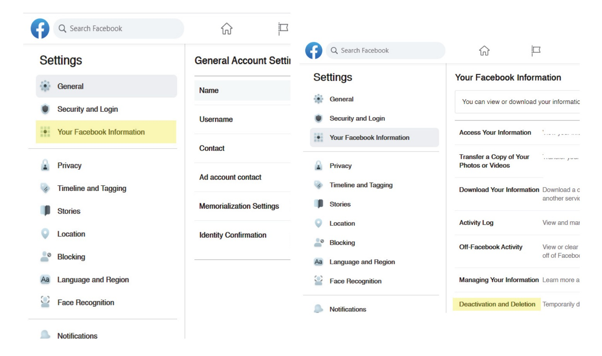
Figure 17: The location of the deactivation option is mentioned within a seemingly
unrelated tab section. Moreover, the steps
for a simple action like deactivating a Facebook account, which can be achieved in two or three steps,
is made complicated by
involving six to eight steps.
[5]
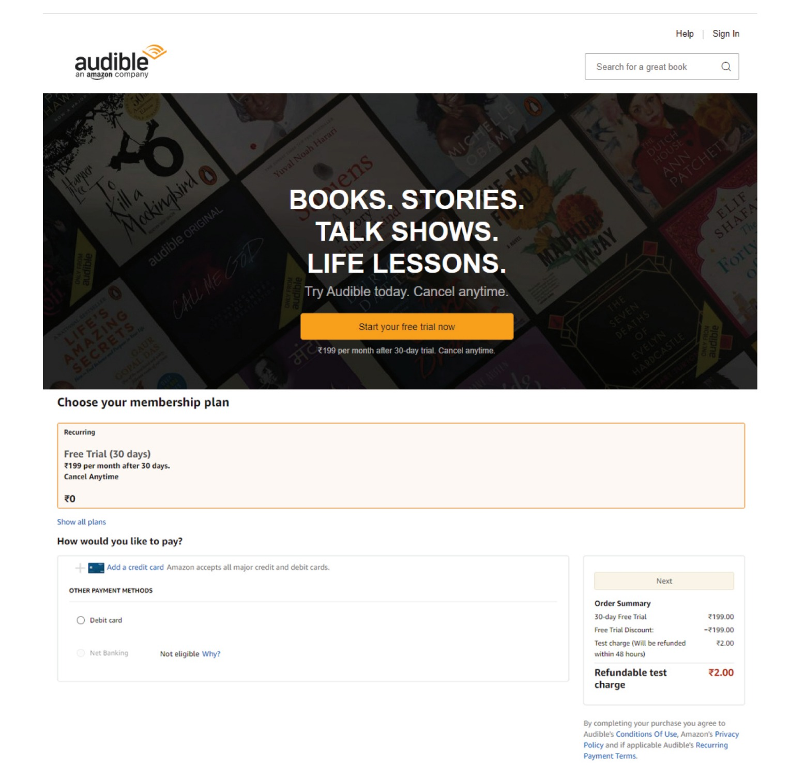
Figure 18: The Audible website offers a free trial but on clicking the Call-to-Action
in
(a), the website proceeds to ask for the
user’s credit/debit card details.
[5]
This research highlights the limited ability of end-users to identify dark patterns, with significant
variations in identification rates among different patterns. The identified variables, such as frequency of
occurrence, trustworthiness, level of frustration, misleading behavior, and physical appearance, play
crucial roles in the identification process. The findings emphasize the need for increased awareness,
improved user interfaces, and effective countermeasures to mitigate the impact of dark patterns on
end-users. Further research can focus on developing strategies to enhance user awareness and empower
individuals to recognize and resist dark patterns.
9. Demo [Written by Akshata Anil
Mithari]
In our study, we developed a sample website (as shown in Figure 19) incorporating various types of dark
patterns from different
taxonomies.
Users were presented with this demo and then asked to provide feedback through a Google Form. The form
captured
their experiences and perceptions of the website. The report includes screenshots of the user responses (as
shown in Figure 20), as
well
as
relevant pictures from the website illustrating the implemented dark patterns. These findings provide
valuable
insights into user interactions and responses to dark patterns in a controlled environment.
Figure 19: Demo Website Screenshots
Figure 20: Google Form Screenshots of Responses
9. Conclusion [Written by Akshay Ghavale]
To summarize, dark patterns are deceptive design strategies intended to manipulate and influence online user
behavior. They are meticulously designed to exploit psychological biases and nudge people into activities
they may not have meant or desired. Dark patterns can be found on e-commerce websites, social media
platforms, and mobile applications. Dark patterns are troubling because they can have unexpected
implications such as privacy violations, higher spending, and decreased user liberty. Companies can push
users towards choices that serve their own interests, frequently at the expense of the users' best
interests, by employing strategies such as hidden costs, confusing interfaces, and false information.
Understanding and acknowledging dark patterns is essential for users to make educated online decisions and
maintain their rights. Companies and authorities must follow ethical design principles in order to encourage
transparency and accountability in user experiences. We can build a digital environment that respects users'
autonomy and supports their well-being by encouraging user empowerment, informed consent, and true choice.
Combating dark patterns, in the end, requires a collaborative effort from users, designers, and legislators.
Users should remain watchful, learn about popular dark pattern methods, and report cases of deceptive
design. Designers and businesses must prioritize user trust and ethical standards, ensuring that their
design choices are in line with user demands and preferences. Regulators can play an important role in
creating rules and enforcing regulations that promote fair and transparent design processes, holding those
who use deceptive strategies accountable. We can work toward a digital ecosystem that respects user freedom,
encourages trust, and empowers individuals to make informed digital choices by raising awareness, supporting
ethical design, and enforcing relevant laws.
10. References
[1] Surkis A, Read K. Research data management. J Med Libr Assoc. 2015
Jul;103(3):154-6.
doi:
10.3163/1536-5050.103.3.011 PMID: 26213510; PMCID: PMC4511058.
[3] C. M. Gray, Y. Kou, B. Battles, J. Hoggatt, and A. L. Toombs, “The Dark
(Patterns) Side of UX Design,” Proceedings of the 2018 CHI Conference on Human Factors in Computing Systems
- CHI ’18, pp. 1–14, 2018 doi:
https://doi.org/10.1145/3173574.3174108
[4] M. Nouwens, I. Liccardi, M. Veale, D. Karger, and L. Kagal, “Dark
Patterns
after the GDPR: Scraping Consent Pop-ups and Demonstrating their Influence,” 2020,
doi:
https://doi.org/10.1145/3313831.3376321
[5] A. M. Bhoot, M. A. Shinde, and W. P. Mishra, “Towards the Identification
of
Dark
Patterns: An Analysis Based on End-User Reactions,” IndiaHCI ’20: Proceedings of the 11th Indian Conference
on
Human-Computer Interaction, Nov. 2020.
doi: https://doi.org/10.1145/3429290.3429293
[6] Arunesh Mathur, Mihir Kshirsagar, and Jonathan Mayer. 2021. What Makes a
Dark
Pattern... Dark? Design Attributes,
Normative Considerations, and Measurement Methods https://doi.org/10.1145/3411764.3445610